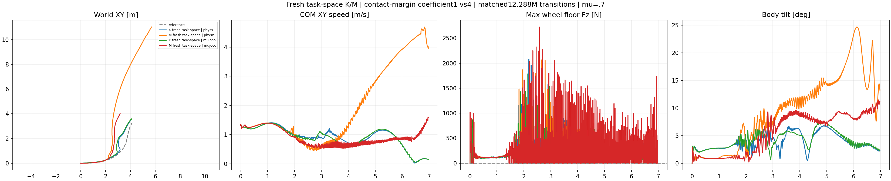
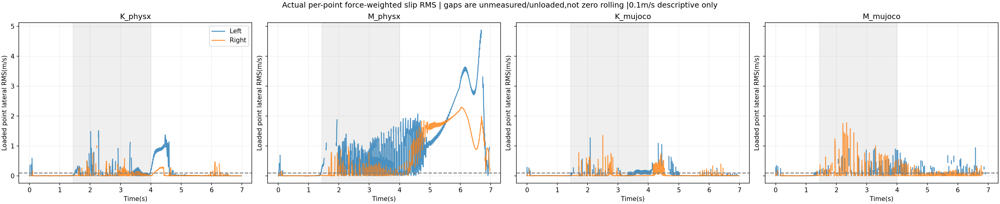

Both12,288,000-transition from-scratch policies and all four native episodes completed. Neither actor passes the nominal task in both engines. More contact penalty does not yield successful high-speed,beta-tracking,continuous-support turning. No new friction sweep follows.
| Case | Core XY RMSE(m) | Speed/reference | Beta RMSE(deg) | Any-wheel support(%) | Max gap(ms) | AngularHF/original | Failed checks/9 |
|---|---|---|---|---|---|---|---|
| K_physx | 0.318 | 0.942 | 21.70 | 93.77 | 47.5 | 0.472 | 8 |
| M_physx | 0.750 | 0.806 | 28.74 | 93.95 | 32.5 | 0.841 | 9 |
| K_mujoco | 0.420 | 0.891 | 23.38 | 92.19 | 50.0 | 0.331 | 8 |
| M_mujoco | 0.637 | 0.719 | 23.21 | 69.28 | 50.0 | 0.780 | 9 |
Core1.44–4.00s; support0.02–6.96s sampled at every actual2.5ms physical step. The original nine checks are retained: core/whole XY RMSE≤0.15m and peak≤0.30m; core speed ratio0.95–1.10; intended nonzero-beta RMSE≤10deg; angular-XY10–100Hz RMS≤0.7 of original same-engine PPO; upward floor-normal force strictly above5N on at least one wheel at every physical sample,with support100% and no gap. One wheel may lift; no height/flight gate is added. Whole-body integrity and within-turn speed remain necessary. Quiet or upright does not imply successful tracking.

| Case | Loaded lateral-point RMS median,L/R(m/s) | Identified loaded samples RMS>0.1m/s,L/R(%) | Loaded wheel camber median,L/R(deg) |
|---|---|---|---|
| K_physx | 0.059 / 0.012 | 35.7 / 18.2 | 18.7 / 11.1 |
| M_physx | 0.446 / 0.014 | 86.9 / 22.0 | 66.1 / 36.3 |
| K_mujoco | 0.026 / 0.008 | 28.7 / 5.4 | 56.3 / 13.7 |
| M_mujoco | 0.256 / 0.015 | 73.9 / 28.1 | 63.3 / 33.5 |
Lateral slip is the original native collector's normal-force-weighted RMS of material-point velocity at actual ground-contact points whose individual normal force exceeds5N. It includes wheel spin. Zero-contact placeholders are excluded; aggregate wheel load above5N with no identified strong point is not counted as measured zero slip. Signed slip and individual raw contact vectors are not retained.0.1m/s is a descriptive cutoff,not a new failure gate,friction-cone saturation measurement or identified stick/slip boundary. Fractions refer to valid loaded samples,not whole-episode time.

M produces more left-wheel sliding,but also much worse XY/beta tracking and speed retention. This is uncontrolled motion in an unintended wheel configuration,not a successful drift. Do not directly compare these per-point RMS numbers with the separate historical frozen-K aggregate-contact-point diagnostic; the estimators and actors differ.
Native replay kinematics show M's loaded left-wheel camber medians66.14deg in PhysX and63.26deg in MuJoCo. Camber here is0deg for a vertical wheel,90deg for a horizontal wheel.91.6%/67.9% of M's loaded left-wheel core samples exceed the descriptive60deg cutoff. Root tilt can remain small while wheels tilt strongly and the cylinder changes how it bears on the floor. The current world-axial-heading reward ignores axle tilt,so it permits this configuration. The camber diagnostic adds no gate or physics step; it identifies a missing geometric objective that should be addressed before another contact-weight sweep.
K_physx. At2.24s upright withXY0.083m andbeta-21.1deg; at3.00s XY0.173m. By4.00s XY0.623m andbeta0.1deg. At6.96s it is upright and slow(0.15m/s),XY0.199m. Native post-initial nonwheel force never exceeds5N and peak root tilt is6.81deg,but path,beta,speed and continuous support fail. Low angularHF is not task success.
M_physx. At2.24s XY0.470m,beta+19.7deg; at3.00s XY0.861m,beta+25.6deg. Wheels/legs are strongly splayed/tilted. At4.00s XY1.169m,then it accelerates away:6.96s XY7.750m,speed3.99m/s instead of the planned stop. Native nonwheel contact first exceeds5N at3.305s. Root remains raised; this is not labelled a complete torso collapse. Large loaded wheel camber and uncontrolled sliding accompany failed tracking.
K_mujoco. Torso stays upright in all inspected frames. At2.24s XY0.115m,beta-20.1deg; at3.00s XY0.455m,beta+26.9deg; at4.00s XY0.699m,beta-1.8deg. At6.96s XY0.219m,speed0.15m/s. No post-initial nonwheel force above5N; root tilt peaks7.49deg. The same actor has different core beta/leg behavior in this engine. All path/beta/speed/support checks still fail.
M_mujoco. At2.24s XY0.339m,speed0.79m/s; at3.00s XY0.716m; at4.00s XY1.015m. At6.96s XY1.223m,speed1.60m/s and only1/8 preceding physical samples is wheel-supported. Wheels/legs are tilted/splayed; root stays mostly upright rather than showing a complete torso fall. Actual nonwheel load first exceeds5N at6.3575s. Continuous support and intended stopping/turn tracking fail.
All350 video frames decode. Stills2.24,3.00,4.00,6.96s and both native plots were inspected; full manual playback is not claimed. The camera follows translation at one fixed1.453m relative distance with fixed world angles,identical across cases/frames. Meshes are opaque and all four overhead plots use common world XY bounds. Original native poses are replayed without pose/height/contact corrections,interpolation or new dynamics.
K and M both start from the identical seed-42 random policy,empty Adam state and zero normalizer count; each collects512×24×1000=12,288,000 transitions. Only continuous worst-substep load-margin coefficient1 versus4 differs within the pair. All15 weights,the other14 definitions,and the same four car task-space objectives are shared. Intermediate leg links are free; wheel world axial heading,root orientation,XY position/velocity and intended beta remain objectives. This cohort is separate from the earlier2.46M warm refinements and model-specific wheel-geometry training.
Original RSL-RL3.0.1 PPO uses adaptive initial learning-rate0.001,clip0.2,entropy0.005.400Hz physics,50Hz held actions,beta+2,action-rate−0.5,grounded+0.4,PD500/10,original motor torque/speed limits and frictionDR[0.3,1.2],encoder bias,COM variation and pushes are unchanged. There is no physical leg-velocity penalty,actuator filter or new tire/geometry law. One fixed actor per arm is evaluated in both engines atmu0.7 with DR/noise off and full6.98s records,not reset-spliced trajectories. This is one deterministic episode per cell and one training seed,not a robustness qualification.
Both formal jobs,CPU tensor/export verifications and all four native validation jobs exited successfully. All owned training/evaluation processes were terminal before collection. Final neural files were independently rehashed on the execution host,but their bytes,physical assets,native binaries and credentials are excluded.82 collected files were rehashed after transfer,and all30 source/config/test files in the three executed snapshots match their local copies. External dependencies remain SHA-bound by the training and evaluation audits. Source tests cover fresh admission,unchanged budgets,exact-driver waiting,zero-contact slip masking,strict5N selection,initial-buffer separation and frozen replay integration.
Complete metrics and body-contact diagnostics · Camber definition/counts and geometry proof · Still review · All-frame/camera/numerical verification · 82-file evidence manifest · Terminal process and neural-hash audit.
Completed collector · Native analyzer · Renderer · Camber diagnostic · Frozen protocol. Exact source/dependency/asset paths and launch commands remain in the collected records. Existing model assets are required for replay and are not republished.
Earlier launch/smoke snapshot · Native validation preflight · Conditional reference force-balance audit.